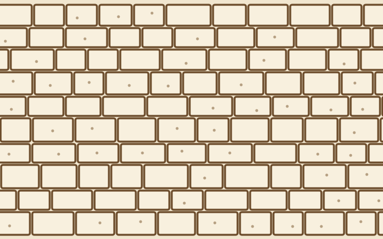

Einstieg · Do Now · Wiederholung
1Nenne deiner Sitznachbarin oder deinem Sitznachbarn die Kennzeichen des Lebendigen. Wechselt euch ab!
Einstieg · Bildimpuls

Einstieg · Fragenentwicklung
Erarbeitung I · Fachbegriffe
1Ordne die Fachbegriffe den passenden Erklärungen zu.
| Fachbegriff | Erklärung |
|---|---|
| Lebewesen, das nur aus einer einzigen Zelle besteht | |
| Gerät, das kleine Dinge vergrößert sichtbar macht | |
| die Idee: Alle Lebewesen bestehen aus Zellen | |
| kleinster Baustein eines Lebewesens |
Wort ziehen oder antippen, dann das Feld antippen.
Erarbeitung I · Entdeckung
2Entnimm dem Text M1 (Arbeitsblatt), wer die Zelle entdeckt hat und wie stark sein Mikroskop vergrößerte. Trage die Angaben in die Zeitleiste ein.
| Jahr | Person(en) | Entdeckung / Erkenntnis |
|---|---|---|
Erarbeitung II · Zellvergleich
1Vergleiche anhand von M1 Pflanzenzellen und Tierzellen: Was ist ähnlich, was unterscheidet sich?
2Begründe, warum Schleiden und Schwann die Zelle als „Grundbaustein aller Lebewesen“ bezeichneten.
Sicherung · Merksatz
Die Zelle ist
Entdeckt wurde sie